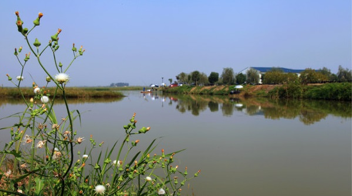
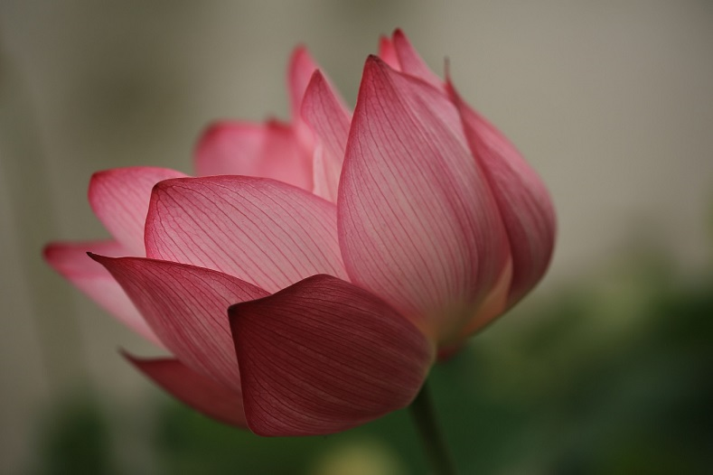
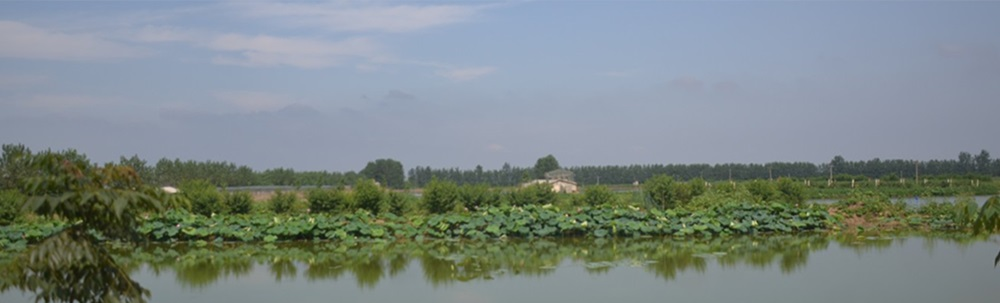
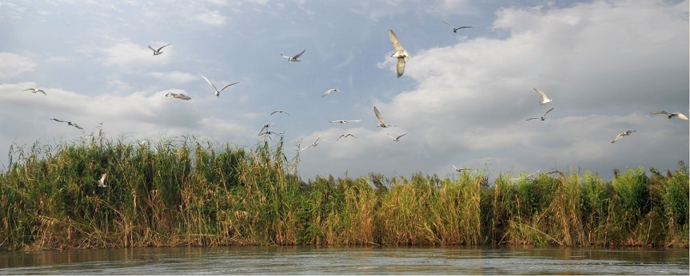

武汉农圣沉湖生态农庄
武汉农圣沉湖生态农庄位于蔡甸区消泗乡，与国家级保护区沉湖湿地相邻，空气清新，环境优美，0污染！
武汉农圣沉湖生态农庄有限公司
手机: 13995556773
免费服务热线: 400-968-2686
农圣沉湖原生态食材
QQ群: 296251895
地址: 武汉市蔡甸区消泗乡

武汉农圣沉湖位于蔡甸区消泗乡，与国家级保护区沉湖湿地相邻，空气清新，环境优美，0污染！农庄占地500亩，其中鱼塘200亩，拥有畜禽养殖、鱼类养殖、有机蔬果种植和农家乐四个事业部。农庄采用“畜禽粪便-沼气池（有机肥）-蔬果、农作物、鱼牧草”的循环再利用的现代立体生态种养生产方式，所有禽类均为自然放养。在生产养殖过程中均不使用化肥和农药，力求原始自然和绿色环保，让畜禽、蔬果、农作物和水产品在自然生态环境中按照自身原有的生长规律生长，使消费者真正品尝到舌尖上的健康美味。农庄常年为客户提供有机蔬菜瓜果、鱼类、珍珠鸡、贵妃鸡、土鸡、飞鸭、鹅及高品质禽蛋。
农圣风光剪影:



优美的环境，美味的食物，周到的服务，农圣生态农庄无疑是您周末休闲娱乐的好去处。